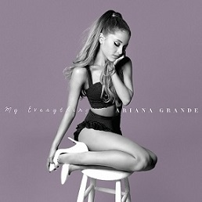

|

|

|

|
Discografía
|
|
|
Yours Truly es el primer álbum de estudio y debut de la
cantante Ariana Grande, publicado mundialmente el 3 de septiembre de 2013 por el Republic Records .
Musicalmente Yours Truly, es un álbum Pop, Dance pop y R&B, además de presentar influencias con la música pop de los años 90, siendo Grande
comparada con...
|
|
Chritsmas Kisses es el primer EP de la cantante estadounidense Ariana Grande,
que fue lanzado el 17 de diciembre de 2013 como una colección festiva de clásicos navideños. La cuarta canción...
|
|

|
My Everything es el segundo álbum de estudio de la artista estadounidense
Ariana Grande, lanzado el 25 de agosto de 2014 a través de la compañía discográfica Republic Records.
Frente a este nuevo gran reto la artista confesó:
«Es un disco que yo quiero hacer algo diferente. No quiero que suene como una extensión de Yours Truly. Quiero que suene como una evolución. Quiero explorar...
|
|
Love me Harder (EP) es el segundo EP de la
cantante estadounidense Ariana Grande. El EP fue lanzado el 21 de noviembre de 2014 (solamente para
Oceanía) por
Republic Records...
|
|
|
|
Dangerous Woman es el tercer álbum de estudio de
la cantante estadounidense Ariana Grande, lanzado el 20 de mayo de 2016 a través del sello discográfico
Republic Records.
Cuenta con las colaboraciones de
Nicki Minaj, Lil Wayne, Macy Gray
y
Future.
El álbum fue originalmente nombrado "Moonlight", y tenía la canción «Focus», como el destinado primer sencillo, se decidió
cambiar el nombre del álbum para Dangerous Woman y destinar la...
|
|
Christmas & Chill es el segundo EP de villancicos, y el tercero en total
de la artista estadounidense Ariana Grande.fue lanzado el 18 de diciembre 2015, a través Republic Records.
Las seis pistas son canciones navideñas originales, fueron escritas y producidas por...
|
|